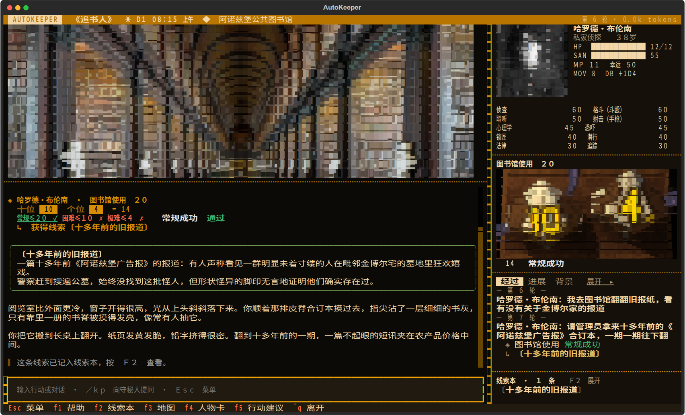

AutoKeeper
Ph'nglui mglw'nafh Cthulhu R'lyeh wgah'nagl fhtagn.
我以为，世上最仁慈的事，莫过于人类的心智无法把它所知的一切关联起来。
H. P. 洛夫克拉夫特，《克苏鲁的呼唤》
中文 CoC 7 版终端跑团
AutoKeeper 是基于《克苏鲁的呼唤》第 7 版规则的中文终端跑团程序。玩家扮演调查员，以自然语言描述行动；AI 担任守秘人，负责场景叙述、NPC 扮演与检定裁定。支持单人游玩、AI 同伴和多人联机。
开局叙事结合模组背景与调查员经历展开，调查过程保留主线之外的日常活动与探索空间。《追书人》以早班火车抵达阿诺兹堡为起点：托马斯的家位于小镇尽头的公墓旁，玩家可在途中问路、用餐，或前往图书馆查阅旧报。对于原作未覆盖的行动，守秘人可即兴补充人物、地点和支线，并将其写入本局记录；严格模式则限制对原作的扩展。
检定采用物理模拟的十面骰，由玩家操作；消耗幸运与孤注一掷也由玩家决定。系统按规则结算理智、伤势和成长，记录已发现的线索、手稿及人物信息，并在每回合结束后自动保存进度。
彩色字符画与场景表现
历史照片与模组插图经转换后以彩色字符画呈现，配合随场景变化的雨雪、雾气和灯影。NPC 对话显示人物立绘，重要场景可展开为整屏画面，即兴生成的人物与地点也支持配图。本机安装并登录 Codex 后，可启用 AI 图像生成，根据剧情变化重绘受损建筑、受伤人物等内容。
查看实机完整 README调查桌面与实机图集
十二张实机画面，可以用左右方向键切换，点击画面或按回车打开原图。



模组导入与原创生成
仓库附带《追书人》《冬雪之下》和《有些人油盐不进》三个模组，也支持导入其他 CoC 模组。可接受的文件格式包括 PDF、Word、Markdown、文本和 ZIP。AI 通读原文后整理人物、地点、线索与事件，保留插图和手稿，经校验后编译为可游玩的模组。
uv run autokeeper import 模组.pdf
原创生成支持从简短设定开始，通过联网考据、剧情编写与配图构建模组。导入、图像理解和游玩可分别配置模型，无须使用同一家服务。
uv run autokeeper generate "1931 年上海，一张没有标签的唱片" --id changpian
模组规则与自定义插件
规则插件用于实现疾病蔓延、倒计时、资源消耗及场景机关等特殊机制。AI 可在模组编译阶段编写插件，通过隔离沙箱中的测试后加载。游玩时按 Ctrl+K，可用自然语言添加自定义规则。插件支持挂载状态面板、注册行动，以及选择、填空、排序和棋盘小游戏。
模组格式规则插件调查员管理与多人联机
调查员可采用模组预设，也可根据简短人设由 AI 协助创建。以历史或公众人物为原型时，程序检索相关资料与肖像，结合人物经历和模组年代确认背景，再按七版规则核算属性及技能点。已有角色卡支持通过骰娘 .st、表格、PDF、纸质卡照片或酒馆卡导入。
多人游戏由房主在标题页创建房间，并分享访问地址。其他玩家通过浏览器创建角色并加入，无须安装 Python 或配置密钥；模型调用与存档保存在房主设备上，空余席位可由 AI 接替。玩家分别提交行动，守秘人依次处理；叙事期间可提前输入下一轮行动。
联机支持断线后重新入座，可在局域网内使用，也可通过虚拟局域网连接异地玩家。观战模式由 AI 调查员完成整局游戏。
联机说明查看角色库与房间安装与启动
运行环境为 Python 3.12+、uv 和 Node.js 18+；建议安装 chafa 以显示照片字符画。克隆仓库后安装依赖、准备模组，并运行 doctor 检查环境。
git clone https://github.com/satoshinji2992/autokeeper cd autokeeper uv sync --extra claude --extra graphrag uv run autokeeper setup uv run autokeeper doctor
模型配置与启动
支持 Claude、DeepSeek、Codex、Ollama 及兼容接口，可按职责分别配置模型。在标题页选择“新的调查”，指定模组与调查员后开始游戏。
uv run autokeeper
浏览器游玩使用 uv run autokeeper serve 启动。本网站仅提供项目介绍，实际游戏与模型调用在用户设备上运行。
从 0.0.1 升级
升级前请备份 saves/。0.0.2 将数据整理到 data/，自己的调查员、本地模型和知识库会自动迁移，但旧版存档不能继续读取。
各系统安装说明模型与花费文档、源码和署名
代码以 MIT 协议发布。界面基于 Textual，照片转字符画使用 chafa，其他掷骰和骰娘指令使用 BCDice；模型编排与检索使用 LangGraph、LangChain 和 LightRAG。开发约定、模组格式、插件说明及评测记录见仓库文档。
本网页直接使用游戏的 ASCII 标题字和标题画字符绘制数据。原画是 Dominique Signoret 的 Cthulhu and R'lyeh，来自 Wikimedia Commons，按 CC BY-SA 3.0 使用，经过裁剪、调色与字符化处理。
界面字体采用 Fusion Pixel 12px Monospaced，作者 TakWolf，按 SIL Open Font License 1.1 使用。字体文件与许可证随网页一同提供。
自带模组为同人改编，原作版权归各自作者与出版方。模组中的历史照片署名见各自的 art/credits.yaml。Call of Cthulhu 是 Chaosium 的商标，本项目与 Chaosium 无关。
GitHub 源码游玩指南图片与模组署名原画来源CC BY-SA 3.0